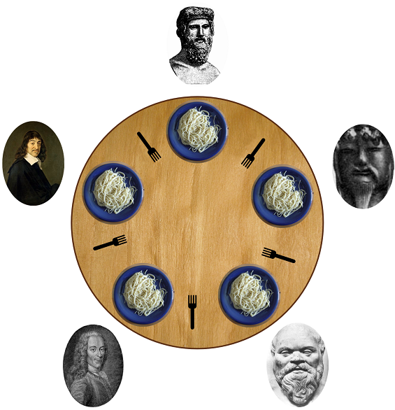
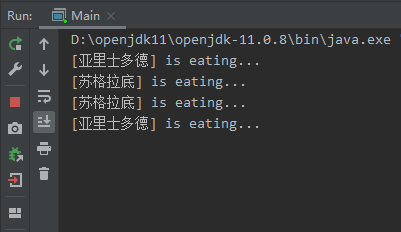
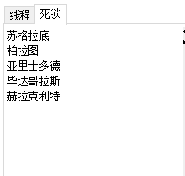
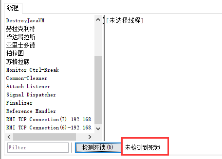

哲学家进餐问题是计算机科学中的一个经典问题，同时也是操作系统这门课上非常著名的一个关于多线程同步与互斥的问题。
1. 问题描述 在1971年，著名的计算机科学家艾兹格·迪科斯彻提出了一个同步问题，即假设有五台计算机都试图访问五份共享的磁带驱动器。稍后，这个问题被托尼·霍尔重新表述为哲学家就餐问题。这个问题可以用来解释死锁和资源耗尽。
假设有五位哲学家围坐在一张圆形餐桌旁，做以下两件事情之一：吃饭，或者思考。吃东西的时候，他们就停止思考，思考的时候也停止吃东西。餐桌中间有一大碗意大利面，每位哲学家之间各有一只餐叉。因为用一只餐叉很难吃到意大利面，所以假设哲学家必须用两只餐叉吃东西。他们只能使用自己左右手边的那两只餐叉。哲学家就餐问题有时也用米饭和五根筷子而不是意大利面和餐叉来描述，因为吃饭必须用两根筷子。
如图所示:

假设我们要求哲学家遵守以下规则：
哲学家在左边的叉子可用（没有其他人拿起）之前处于思考状态。如果左边的叉子可用，就拿起来。
哲学家等待右边的叉子可用。如果右边的叉子可用，就拿起来。
如果两个叉子都已经拿起来，开始吃意大利面，每次吃面都花费同样的时间。
吃完后先放下左边的叉子。
然后放下右边的叉子。
开始思考（进入一个循环）
2. 代码描述 很显然，如果哲学家们都遵照上述的规则来进行进餐的话，有极大的可能会发生其中的某些人永远都吃不到面，也就是说，发生了死锁。我们可以用代码来描述一下发生死锁的情况。
1 2 3 4 5 6 7 8 9 10 11 12 13 14 15 16 17 18 19 20 21 22 23 24 25 26 27 28 29 30 31 32 33 34 35 36 37 38 39 40 41 42 43 44 45 46 47 48 49 50 51 52 53 54 55 56 57 58 59 60 61 62 63 64 65 66 public class Fork private int number; public Fork (int number) this .number = number; } } public class Philosopher extends Thread private Fork left; private Fork right; public Philosopher (String name, Fork left, Fork right) super (name); this .left = left; this .right = right; } @Override public void run () while (true ) { synchronized (left) { synchronized (right) { eat(); } } } } public void eat () System.out.println("[" + Thread.currentThread().getName() + "] is eating..." ); try { Thread.sleep(500 ); } catch (InterruptedException e) { e.printStackTrace(); } } } public class Main public static void main (String[] args) Fork fork_1 = new Fork(1 ); Fork fork_2 = new Fork(2 ); Fork fork_3 = new Fork(3 ); Fork fork_4 = new Fork(4 ); Fork fork_5 = new Fork(5 ); new Philosopher("苏格拉底" , fork_1, fork_2).start(); new Philosopher("柏拉图" , fork_2, fork_3).start(); new Philosopher("亚里士多德" , fork_3, fork_4).start(); new Philosopher("毕达哥拉斯" , fork_4, fork_5).start(); new Philosopher("赫拉克利特" , fork_5, fork_1).start(); } }
运行一段时间之后（其实用不了多久）就可以看到控制台停在那里不动了，如图所示：

打开 jconsole 检测死锁，也可以发现确实上述几个线程都陷入了死锁状态了。

3. 死锁产生的条件 上面用代码展示了一下在上述规则下确实可能会发生死锁从而导致哲学家们都吃不上面的情况。这里简单回顾一下死锁发生所需要满足的必要条件：
具体的解释可以参考各大《操作系统》教科书或维基百科。上述四个条件必须同时满足，才有可能发生死锁，要解除死锁状态，就必须打破其中至少一个条件。
4. 解决死锁 在这个问题中，可以将吃面所需要用到的叉子类比成资源，要吃面之前必须先拿到叉子，意味着执行某项任务前必须先申请到所需的资源。显然，在哲学家进餐问题中，对于资源（叉子）的申请顺序符合上述 环路等待这个条件，因此我们可以更改哲学家们拿起叉子的顺序，让他们不构成环路，这是其中一种解决死锁的方法。另外还有许多别的方式打破死锁，这里试举一例。在这个问题中，哲学家们一旦拿起了叉子就会一直持有不会放手，也不会被其他人拿走，正好体现 保持和不剥夺 条件，因此可以从破坏这个条件下手去解除死锁，即，如果哲学家们在一段时间内拿不到两只叉子，就让他放弃手中原有的叉子。
相应的改造代码如下：
1 2 3 4 5 6 7 8 9 10 11 12 13 14 15 16 17 18 19 20 21 22 23 24 25 26 27 28 29 30 31 32 33 34 35 36 37 38 39 40 41 42 43 44 45 46 47 48 49 50 51 52 53 54 55 56 57 58 59 60 61 62 63 64 65 66 67 68 69 70 71 72 73 public class InterruptedFork extends ReentrantLock private int number; public InterruptedFork (int number) this .number = number; } } public class Philosopher extends Thread private InterruptedFork left; private InterruptedFork right; public Philosopher (String name, InterruptedFork left, InterruptedFork right) super (name); this .left = left; this .right = right; } @Override public void run () while (true ) { if (left.tryLock()) { try { if (right.tryLock()) { try { eat(); } finally { right.unlock(); } } } finally { left.unlock(); } } } } } public class Main public static void main (String[] args) InterruptedFork fork_1 = new InterruptedFork(1 ); InterruptedFork fork_2 = new InterruptedFork(2 ); InterruptedFork fork_3 = new InterruptedFork(3 ); InterruptedFork fork_4 = new InterruptedFork(4 ); InterruptedFork fork_5 = new InterruptedFork(5 ); new Philosopher("苏格拉底" , fork_1, fork_2).start(); new Philosopher("柏拉图" , fork_2, fork_3).start(); new Philosopher("亚里士多德" , fork_3, fork_4).start(); new Philosopher("毕达哥拉斯" , fork_4, fork_5).start(); new Philosopher("赫拉克利特" , fork_5, fork_1).start(); } }
运行上述代码，可以发现这回程序可以一直运行下去，并没有发生死锁。
同样地，打开 jconsole 的检测死锁栏目页，也可以验证程序并未发生死锁。

以上，我们用代码演示了哲学家就餐问题以及极有可能发生的死锁现象，并给出了其中的一种解决方案。
参考链接：
哲学家就餐问题_维基百科
{kind=link}
{kind=link}
{kind=link}
{kind=link}